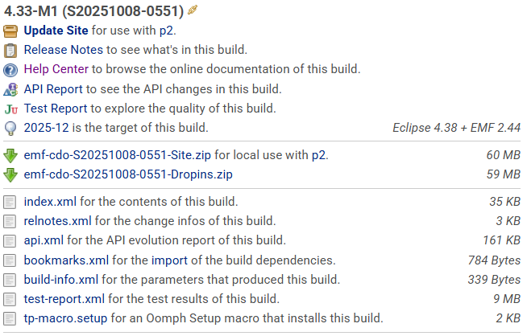

Preparing the Workspace |
For an application that uses CDO, install the CDO and Net4j SDKs and compatible EMF bundles into the PDE target platform used to compile and launch that application. The target platform is the set of plug-ins against which PDE resolves the application; it is separate from the projects checked out and open in the workspace. Application plug-in manifests should declare the bundles they use. Database drivers and server-side extensions are needed only when the application uses those components, not for every CDO client.
The following prerequisites must be installed into the target platform of your workspace:
Installing the SDKs in a target platform does not automatically add dependencies to an application's bundle manifest or make them available in a non-PDE runtime. Declare the bundles the application uses and include the corresponding runtime platform when deploying it.
Note: If you are using an IDE other than Eclipse, you will need to manually download and include the required libraries in your project's build path.
At the bottom of the CDO Downloads page, you find a link to All Promoted Builds,
where you can download emf-cdo-{qualifier}-Dropins.zip archives containing all necessary libraries.
Use a compatible set of CDO, Net4j, EMF, and Eclipse versions. The CDO downloads page identifies associated repositories and dependencies. Do not infer compatibility from the fact that individual bundles install or compile in isolation.
In the following chapter, you find information about using the Oomph Setup Engine to automate the setup of your Eclipse workspace.
In Installing the Sources, you find information about checking out the CDO sources from Git and importing them into your workspace.
The Oomph Setup Engine applies provisioning tasks to an Eclipse installation and workspace, such as installing bundles, configuring preferences, and importing projects. It is useful for repeatable development setups; it is not required for an application to use CDO. On the Oomph Homepage, you find information about how to use the Eclipse Installer and how to author setup models.
A prerequisite for using the Oomph Setup Engine is to have the Oomph plugins installed in your Eclipse IDE. In many cases, the
Oomph plugins are already included in the Eclipse IDE packages available from the Eclipse
Downloads page. If you are using a custom Eclipse installation, you can install the Oomph plugins by adding the
Oomph update site (http://download.eclipse.org/oomph/updates/latest/) to your Eclipse installation and installing the
"Oomph Setup" feature.
Once you have installed the Oomph plugins, you can add setup tasks to the workspace.setup file or the installation.setup
file of your Eclipse IDE. You can open them via the Navigate > Open Setup sub menu of the main menu.
For application development, a target definition needs the CDO SDK and its dependencies. For developing CDO itself, the repository setup also imports CDO source projects into the workspace and configures the build environment; the SDK target alone does not provide those projects. The CDO build produces a setup macro for its target platform. To use it, find the appropriate build of CDO on the CDO Downloads page. Each build is shown as follows:

The link to the generated setup macro is the last one in the list of links below the build description. It points to a file named
tp-macro.setup. You can reference this file from your setup file as follows:
<?xml version="1.0" encoding="UTF-8"?>
<setup:MacroTask
xmi:version="2.0"
xmlns:xmi="http://www.omg.org/XMI"
xmlns:setup="http://www.eclipse.org/oomph/setup/1.0"
id="CDO-TP"
macro="https://download.eclipse.org/modeling/emf/cdo/updates/integration/latest/tp-macro.setup#/"/>
You can copy the XML snippet above and paste it into your setup file. The Setup editor will automatically convert the XML snippet into a MacroExpansion, fetch the referenced setup macro and expand it inline as a preview.
This example is a floating integration target: it follows the latest integration build as that repository changes. Choose a release macro for release development, or pin a specific build macro when repeatable dependency resolution is more important than tracking updates. The macro configures the target platform; it does not replace project checkout/import setup. You can then save the setup file and perform it via the Perform Setup Tasks action in the Help menu.
CDO publishes floating setup macros for the supported release and integration channels. Use the channel that matches the repository version you intend to develop against: